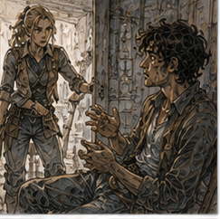

I lasted until noon before becoming unbearable.
This was not entirely about magic.
Possibly forty percent.
The rest was because I had no work, Hessa had told me not to experiment, my chair was comfortable enough to make staying upstairs plausible, and therefore I needed to leave before I invented a reason to disobey someone.
I went to the Guild.
This was not work.
I told myself that twice.
The side yard was loud before I reached it.
Not the throwing court.
The larger training yard beyond it.
Wood striking wood.
Boots.
Someone shouting, “Again.”
Then Alden swearing.
I went around the corner.
Pessa had six Bronzes in the yard.
Alden was one.
Lio was another.
The other four I knew by face and not well enough to name.
Good.
No introductions required.
They were working in pairs with padded practice weapons and short round shields.
Not fighting.
Drilling.
One attacked.
One moved.
Reset.
Again.
Simple enough to look simple.
That usually meant it was not.
I stopped by the wall.
Pessa saw me.
“Watching?”
“Yes.”
“Good.”
That was all.
No invitation.
No chair.
No adaptation.
Excellent.
I leaned against the wall with both crutches planted.
For perhaps thirty seconds.
Then my hands objected.
I shifted.
Pessa noticed.
Of course.
She pointed with her chin toward a stack of empty grain sacks beside the shed.
“Sit if you're staying.”
“I can stand.”
“Didn't ask.”
I sat on the lowest sack.
Not elegant.
Comfortable enough.
Alden saw me during reset.
He grinned.
Then Pessa hit his shield with the flat of her practice blade.
“Eyes.”
He turned back.
I enjoyed this.
The drill changed.
Attackers now had three options.
High cut.
Low cut.
Straight shove with shield.
Defender did not counter.
Only moved, covered, reset.
Alden was fast.
Too fast sometimes.
He anticipated the high cut before it came and moved early.
Pessa stopped him.
“You guessed.”
“I was right.”
“You guessed.”
“He lifted his shoulder.”
“Then read the shoulder.”
“I did.”
“No. You decided before he finished telling you.”
Alden looked toward me.
I raised both hands.
Bad idea.
One crutch fell sideways.
It hit the wall.
Everyone looked.
I retrieved it.
“Continue.”
Pessa's face did not move.
Alden laughed.
She hit his shield again.
Good.
I watched.
This was familiar in a way that made my chest hurt.
Not because I missed having two legs.
I did.
But that was too simple.
I missed being inside the problem.
Watching combat was not combat.
Watching magic was not magic.
Watching work was sometimes work because analysis could be the work.
This was not.
Pessa changed pairs.
Lio defended against Alden.
Alden attacked high.
Lio moved.
Reset.
Low.
Move.
Reset.
Shield shove.
Lio absorbed too much of it instead of clearing.
Pessa corrected his angle.
Again.
The pattern accumulated.
Not the movements.
The timing.
Pessa was teaching them not to choose before the information existed.
That sounded like several things I had recently experienced.
I refused to make a philosophy out of it.
Alden attacked.
Lio moved late.
Their shields struck.
Lio stumbled.
Recovered.
Pessa said, “Again.”
No speech.
No concern.
Correct.
I wanted to try.
The desire arrived whole.
Not theoretical.
Not “I should determine whether.”
Not “future combat capability requires.”
I wanted a shield in my hand.
I wanted Alden to come at me.
I wanted to be inside the timing.
This was inconvenient.
Pessa looked over.
She had seen something.
“What?”
I said, “Nothing.”
“Good.”
She returned to the drill.
I hated competent people.
After another ten minutes, the six Bronzes broke for water.
Alden came over.
“You look miserable.”
“I am enjoying myself.”
“Worse.”
“Yes.”
He drank.
Sweat ran down his neck.
Nineteen-year-old body reacted to the smell of effort with recognition.
Not attraction.
Memory.
Training yards had a smell.
Dust, leather, old wood, sweat, metal somewhere even when the weapons were padded.
My body knew it before my mind did.
“You want in?” Alden asked.
“Yes.”
Pessa, across the yard, said, “No.”
I looked at her.
“I wasn't asking you.”
“You were going to.”
“I was answering Alden.”
“He can't put you in my drill.”
Alden said, “I could.”
Pessa looked at him.
He drank water.
I said, “I know I can't do the footwork.”
“Correct.”
“I could defend seated.”
“No.”
“Why?”
“Because this drill is movement.”
“I can move seated.”
“Not the movement I'm teaching.”
“What if we change the drill?”
“No.”
There it was.
I felt the old response rise.
Not anger exactly.
Architecture.
Fine.
If this drill required lower-body movement, construct another drill isolating upper-body read, shield angle, weapon line, seated recovery.
Perfectly reasonable.
Pessa watched my face.
“Don't invent drill.”
I stared.
“You've said that before.”
“You needed it again.”
Alden laughed into his cup.
I ignored him.
“I want to train.”
“Good.”
That stopped me.

Pessa came over.
She took Alden's cup from him, drank from it, handed it back.
He looked offended.
She did not care.
“I want to train,” I repeated.
“I heard.”
“You said no.”
“To this.”
“What can I do?”
“I don't know.”
That answer landed harder than no.
“You don't know?”
“No.”
“You are literally the movement expert.”
“Yes.”
“And I am missing a lower leg.”
“Yes.”
“This seems within the category.”
“Does it?”
I opened my mouth.
Pessa pointed at the yard.
“What are they training?”
“Reading committed movement before choosing response.”
“Partly.”
“Maintaining balance under changing line.”
“Partly.”
“Distance.”
“Yes.”
“Shield positioning.”
“Yes.”
“Recovery.”
“Yes.”
“Then isolate the parts I can do.”
“No.”
“Why?”
“Because you just made a list from watching twenty minutes and decided the list is the thing.”
I stopped.
Alden stopped smiling.
Good.
Pessa continued.
“You want to train?”
“Yes.”
“Train what?”
“Combat.”
“That's not a thing.”
“It is absolutely a thing.”
“No. It's a pile of things people call one thing after they already know the pile.”
I hated this.
“What do you want to be able to do?”
“Fight.”
“Still not a thing.”
“Survive violence.”
“Better.”
“Protect myself.”
“Better.”
“Protect other people.”
“Different.”
“Use a sword.”
“Different.”
“Use Barrier support with movement.”
“Not cleared.”
“I know.”
“Then not today.”
I gripped the crutch handle.
My palm hurt slightly.
Not injury.
Pressure.
Pessa saw.
She always saw.
“What do you want today?”
I looked at the yard.
Alden and Lio.
Shields.
Padded blades.
Dust.
Timing.
“I want someone to come at me and not feel like the answer is to leave.”
Silence.
Not dramatic.
Just enough.
Pessa nodded once.
“That I can work with.”
Alden said, “Now?”
“No.”
He looked disappointed.
I was disappointed.
Pessa said, “You came here to train?”
“No.”
“What did you come here for?”
“To not be upstairs.”
“Then watch.”
“That is cruel.”
“Watch with a question.”
“What question?”
She pointed at the pairs reforming.
“When do they know enough to move?”
I looked.
“That is your drill.”
“Yes.”
“So you are giving me work.”
“No.”
“What is it?”
“Watching.”
“That sounds like unpaid work.”
“Leave.”
I stayed.
Alden went back into the yard.
The drill resumed.
I watched with the question.
When do they know enough to move?
Annoyingly good question.
The high cut began in the shoulder.
No.
Sometimes.
One of the unnamed Bronzes lifted his shoulder for both high and straight attacks.
His hip told more.
Lio's shield shove committed through the rear heel before the shield moved.
Alden's low attack was readable in his eyes if you knew him, which was useless against strangers.
Pessa corrected that.
“Stop looking at the target.”
Alden said, “I'm not.”
“You are.”
He swore.
Again.
I watched.
The answer was not one moment.
Of course not.
Enough depended on cost of being wrong.
Move too early and the attacker changed line.
Move too late and line arrived.
Some defenses tolerated uncertainty better than others.
That was more interesting.
I leaned forward.
My phantom left foot felt planted.
I noticed.
Did nothing.
The sensation stayed for several breaths.
Then faded.
Not magic.
Not relevant.
Maybe relevant to movement later.
Not now.
I watched.
Pessa changed the drill again.
Now defenders could counter after the first movement.
Everything became messier.
Alden improved immediately.
Lio improved more slowly and then more reliably.
One of the others kept overcommitting to counters and got shoved backward twice.
Pessa did not stop him the first time.
She stopped him the second.
Why?
Because first could be noise.
Second was pattern.
Maybe.
I wanted to ask.
I did not.
This was difficult.
After another twenty minutes, Pessa called the session.
The Bronzes scattered toward water, shade, food, other work.
Alden dropped beside me on the sacks.
“You watched the whole thing.”
“Yes.”
“Why?”
“Pessa made me.”
“I did not,” Pessa said from across the yard.
“You weaponized curiosity.”
“That sounds like your problem.”
Alden leaned his shield against the wall.
“Tomorrow?”
Pessa said, “No promises.”
He looked at me.
I understood the question was not about the throwing game this time.
Maybe.
“Are you training tomorrow?” I asked Pessa.
“Yes.”
“Can I watch?”
“Yes.”
“Can I do anything?”
“Maybe.”
My heart did the cupboard thing again.
I disliked being nineteen.
“What?”
“Don't know yet.”
“That is irresponsible.”
“Then don't come.”
“I'll come.”
“Fine.”
Alden grinned.
I pointed at him.
“You are not involved.”
“I am absolutely involved.”
“No.”
“You said you wanted someone to come at you.”
“Eventually.”
“I volunteer.”
“Denied.”
“By who?”
“Me.”
Pessa said, “Good.”
Alden looked betrayed.
I stood.
This required more effort after sitting low on sacks.
Right foot closer.
Hands.
Push.
One crutch planted.
Then the other.
No phantom step.
Good.
Pessa picked up a practice shield.
She held it out.
I stared.
“What?”
“Take it.”
I shifted both crutches awkwardly into my left hand.
Bad.
Unstable.
Pessa waited.
I put one crutch against the wall.
Kept the other in my left hand.
Took the shield with my right.
Round.
Padded rim.
Heavier than I expected.
My shoulder was fine.
The problem was everything else.
One hand on crutch.
One hand on shield.
No free hand.
Standing on one foot.
The shield changed my center.
Immediately.
Not dramatically.
Enough.
I felt the correction run through my right ankle, knee, hip.
My left knee moved instinctively as if the missing lower leg could widen the base.
It could not.
I tightened.
Pessa took the shield back.
Three seconds.
Maybe four.
“That,” she said.
I looked at her.
“What?”
“Tomorrow we start there.”
“With holding a shield?”
“With finding out what changes when you hold one.”
I looked at the shield.
That was insultingly basic.
It was also exactly the problem.
“Fine.”
“Not fighting.”
“I know.”
“Not Alden.”
Alden said, “Unfair.”
“Not a system.”
I looked at her.
She looked back.
“Fine.”
“Say it properly.”
“We are not inventing a system.”
“Good.”
“Yet.”
“No.”
I smiled.
She did not.
Maybe slightly.
No.
Probably not.
I retrieved my second crutch.
The yard was emptying.
Alden had to go somewhere.
Pessa had another session.
I had nothing scheduled until Hessa in two days.
Two days.
Not three anymore.
I had successfully allowed one day to happen.
This felt absurdly significant.
I did not write it down.
I went to find lunch.